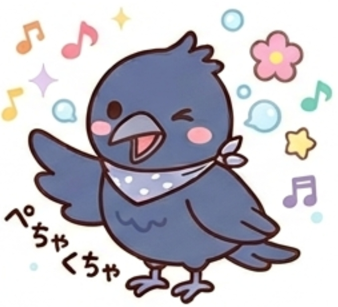

あなたのフレンドタイプは...

GFAD：ホラ吹きカラス
あなたは、退屈な日常や停滞した空気を絶対に許さない、好奇心とエンタメ精神の塊のような人です。面白そうな噂話、人間関係のちょっとした揉め事、新しいトレンドなど、刺激的な話を見つけると首を突っ込まずにはいられません。物事をストレートに受け取るのではなく、「こう解釈したらもっと面白くなるんじゃないか？」と、あえて話をややこしくしたり、裏をかいたりしてその場のノリをコントロールすることに快感を覚えます。
頭の回転が異常に早く、思考の柔軟性はトップクラスです。しかしその反面、自分の過去の発言への執着が全くないため、「昨日と言ってることが180度違う」ということが日常茶飯事の、お天気屋で掴みどころのないタイプです。
友達から見たあなたは、ズバリ「グループの情報をかき混ぜる、愛すべきトラブルの火種」です。
あなたがニヤニヤしながら「ねえ、今の聞いた？ｗ」「ここだけの話なんだけど……」と話し始めるとき、周りは「うわ、またカラスが何か面白いネタ持ってきたぞｗ」「また何か始まったな」と、内心めちゃくちゃワクワクしています。あなたが撒く火種や持ってくる噂話は、いつもグループの退屈な空気を一瞬で一変させるパワーがあるからです。
ただ、あなたの「話を盛るクセ」や「話をややこしくして楽しむ悪趣味さ」を周囲は完全に把握しているため、あなたの言うことを100%真に受ける人はいません。「カラスが言ってることだから、半分くらいはホラだと思って聞こう」というのが、グループ内の暗黙の了解になっています。昨日まで「あの店マジで最高！」と言っていたのに、今日には「あそこはもうオワコンっしょ」と真逆のことを平気な顔で言うので、友達からは「ほんと調子いいなｗ」「口から先に生まれてきたやつ」と呆れられつつも、その予測不可能で絶対に飽きさせないキャラクター性から、集まりには絶対に欠かせない最高に面白いスパイスとして重宝されています。
どんなに冷え切った空気や気まずいムードでも、あなたが一言しゃべれば一瞬で笑いや活気が戻ります。グループのテンションを爆上げする能力はピカイチです。
常に楽しいことへのアンテナを張っているため、面白いトレンドやゴシップを一番早くキャッチして共有してくれます。あなたといるだけで、常に新しい刺激に触れることができます。
昨日どれだけ言い合いをしたり、いじられたりしても、次の日にはケロッと忘れて笑っています。人間関係のドロドロした執着が一切ないため、ある意味で非常に付き合いやすい人です。
あなたの「場を面白くしたい」という悪ノリや悪巧みは、時に度が過ぎてしまい、本当の信頼関係をぶち壊す大火事に発展することがあります。あなたが「これくらい大袈裟に言った方が盛り上がるし」と軽い気持ちで流したデマや、面白がって首を突っ込んだ他人の揉め事が、当事者にとっては全く笑えないレベルの深い傷やストレスになっているケースがあります。
周りが「またカラスが始まったｗ」と笑ってくれているのは、あなたのキャラを理解して「許容できる範囲」で受け流してくれているからです。しかし、それが何度も重なると「カラスは口が軽すぎるから、本当に大事な話は絶対に秘密にしておこう」「ただの調子いいホラ吹き」と、本音の相談相手から真っ先に除外されてしまいます。
時には「盛らない、嘘をつかない、首を突っ込まない」という沈黙の時間を守り、友達に対して「ここぞという時は絶対に裏切らない誠真面目さ」があることを見せてください。それができて初めて、あなたのホラは極上のエンターテインメントとして全員に愛され続けます。